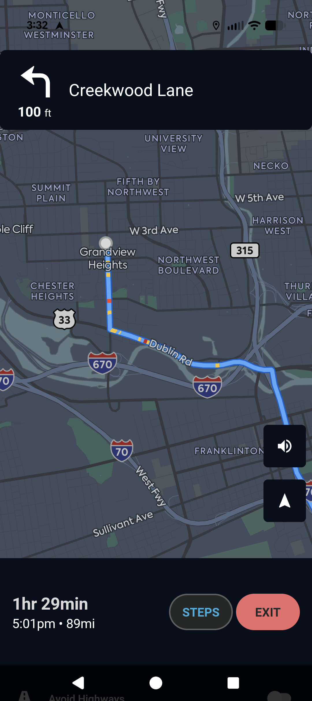

Roadtrippers · 2021
The Long Way Was The Right Way: CarPlay and RV GPS at Roadtrippers
CarPlay was the most-requested feature on the roadmap, but was blocked by three large dependencies with no immediate user impact, and a year of competing priorities.
Context
Roadtrippers helps you plan your next road trip. When I joined, we'd recently been acquired by Togo RV and were looking to deepen the app's value for paying Plus subscribers. I was the project manager, closely embedded with engineering. The team was stable and execution-focused, but had a backlog of foundational technical work that kept getting deprioritized in favor of user-visible features.
Problem
CarPlay and Android Auto were the most-requested features on our roadmap and leadership wanted them shipped. But the path to CarPlay ran directly through work nobody wanted to talk about: an outdated Mapbox SDK that was underperforming and quietly expensive, a routing architecture that didn't yet support in-motion GPS, and a first RV-specific GPS feature set that needed to ship before the CarPlay integration would make sense.
The instinct from leadership was to skip the prerequisites and build toward the shiny thing directly. Engineering knew why that was a bad idea. My job was to translate that gap.
My Approach
I mapped the full dependency chain and made it legible: Mapbox SDK upgrade first, then routing options at the pre-planning level, then RV GPS v1 for in-motion use, then CarPlay and Android Auto. Four sequential phases, each one unblocking the next.
The case for starting with the SDK upgrade was the hardest sell. Leadership's read was essentially: we're already using Mapbox, why spend weeks upgrading before we build anything users can see? The answer was partly technical — the old SDK used inefficient calculation logic that made each routing call more expensive, meaning the longer we waited, the more we'd pay at scale. And building CarPlay on top of an outdated, underperforming SDK would have meant carrying that debt into a high-visibility, complex integration. I wrote up the tradeoffs explicitly, worked through it with the product lead first, and they took it to leadership with a confident, detailed timeline.
The timeline itself was built on an estimation process I developed during this project. The old approach translated story points and velocity into dates imprecisely. It didn't account for team composition, planned interruptions, or uncertainty at the project level. The new process did: total points scoped by team or individual, velocity calibrated to that person or pairing, known delays mapped in advance, and a risk modifier percentage set at kickoff and revisited each phase. That last piece forced an explicit conversation at the start of every phase about how well we actually understood the work — rather than discovering that uncertainty mid-sprint.
What We Built
All four phases shipped in sequence. The iterative approach also turned out to have an unexpected benefit: we learned things in earlier phases that shaped later ones. By the time we reached CarPlay, the team had already worked through routing edge cases, GPS behavior, and RV-specific constraints in ways that would have been much messier to untangle inside a single large integration.
Outcome
RV GPS became a meaningful driver of Plus subscriber growth and retention — a genuine differentiator, paywalled and positioned as a premium capability. Routing options were a lighter win, more useful as a marketing talking point than a growth lever. The Mapbox upgrade paid off in reduced per-call costs at scale, though that savings was felt gradually rather than in a single headline number.
CarPlay shipped roughly a sprint ahead of the original estimate. Not dramatic, but refreshing after a long buildup — and a direct result of the groundwork in earlier phases reducing late-stage surprises.
What I'd Do Differently
Honestly, the project went well. The early friction with leadership was resolved once the case was written up clearly, and the sequencing held throughout. Spending time upfront on tech debt paid off and led to a more stable, less costly feature in the end.
If I could rewind time: having the estimation process in place from the start rather than developing it mid-project. We lost some time early to less reliable timelines, and the process I landed on was repeatable enough that it should have existed already. I've used it on every complex project since.
The broader lesson is one I've carried forward: the most important planning conversations are often about what you're not going to do yet, and what you don't know. The teams that skip that conversation usually end up having it later, under worse conditions.